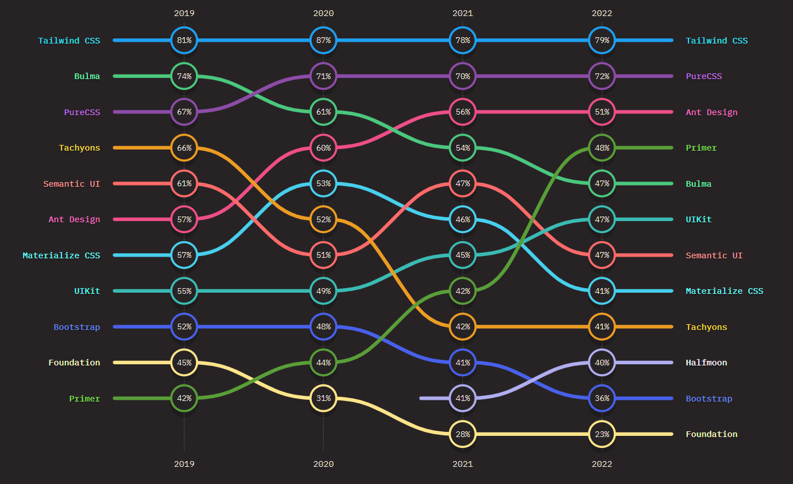
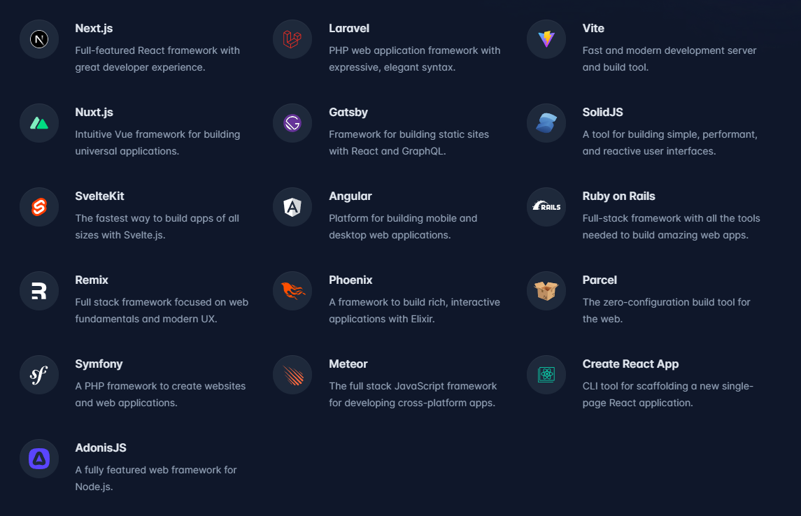
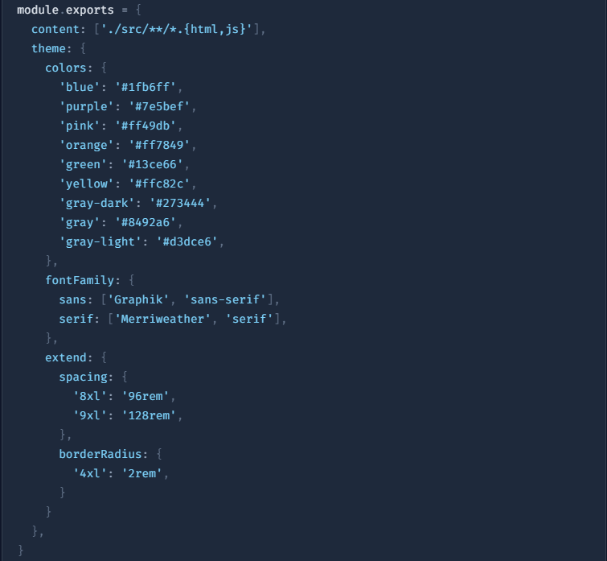
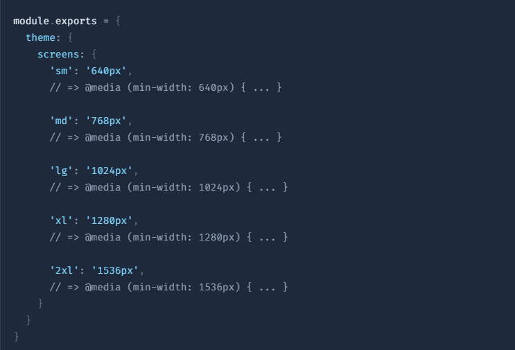
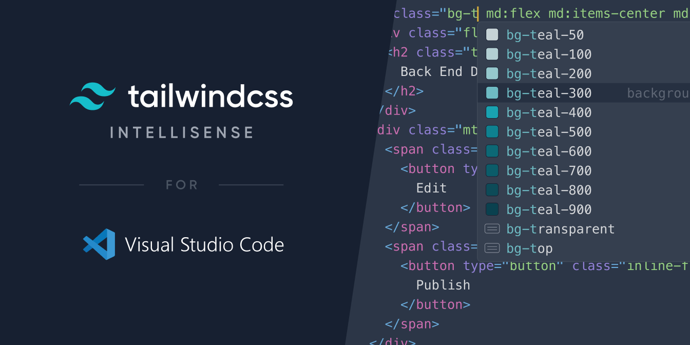
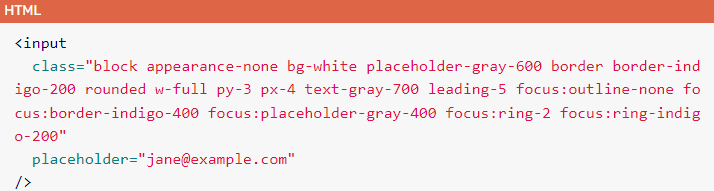

Tailwind CSS

Header

ChitChat
ChitChat
You have a new message!

1. Using Play CDN
2. Using Tailwind CLI tool
Install Tailwind CSS
/** Terminal */
install -D tailwindcss
npx tailwindcss initConfigure your template paths
/** tailwind.config.js */
module.exports = {
content: ["./src/**/*.{html,js}"],
theme: {
extend: {},
},
plugins: [],
}Add the Tailwind directives to your CSS
/** src/input.css */
@tailwind base;
@tailwind components;
@tailwind utilities;Start the Tailwind CLI build process
/** Terminal */
npx tailwindcss -i ./src/input.css -o ./dist/output.css --watchStart using Tailwind in your HTML
/** src/index.html */




 vs
vs
It can get messy with a long list of classes
How about component “bg-white w-full py-3 px-4”?